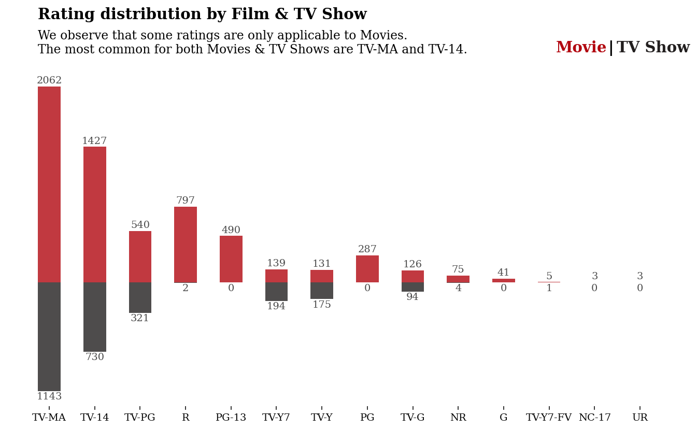

本笔记本的目的是练习数据可视化，并希望在此过程中传达一些最佳实践。
- 作者JOSH
- 原文: https://www.kaggle.com/code/joshuaswords/netflix-data-visualization/notebook?scriptVersionId=58425238&cellId=17
一、数据预处理
1.1 导入数据
import pandas as pd
import warnings
warnings.filterwarnings("ignore")
df = pd.read_csv('netflix_titles.csv')
df.head(3)
for col in df.columns:
null_rate = df[col].isna().sum()/len(df)*100
if null_rate>0:
print("{} null rate: {}%".format(col, round(null_rate,2)))
director null rate: 29.91%
cast null rate: 9.37%
country null rate: 9.44%
date_added null rate: 0.11%
rating null rate: 0.05%
duration null rate: 0.03%
数据集中有5个字段存在缺失值记录，其中director字段中有近三成记录是缺失值。
1.2 缺失值字段处理
这始终取决于场景，但在这种情况下，我会：
- 将空白国家/地区country替换为模式（最常见）国家/地区
- 我想保留导演director字段，因为看某个导演的电影可能会很有趣
- 我想保留演员阵容cast字段，因为看某个演员的电影可能会很有趣
import numpy as np
# Replacments替换
#将空白国家/地区替换为模式（最常见）国家/地区
df['country'] = df['country'].fillna(df['country'].mode()[0])
#我想保留演员阵容，因为看某个演员的电影可能会很有趣
df['cast'].replace(np.nan, 'No Data', inplace=True)
#我想保留导演，因为看某个导演的电影可能会很有趣
df['director'].replace(np.nan, 'No Data', inplace=True)
# Drops删除
df.dropna(inplace=True)
# Drop Duplicates剔除重复
df.drop_duplicates(inplace= True)
#查看各字段null数量
df.isnull().sum()
show_id 0
type 0
title 0
director 0
cast 0
country 0
date_added 0
release_year 0
rating 0
duration 0
listed_in 0
description 0
dtype: int64
1.3 日期处理
将日期更改为datetime类型， 并新增month_added、month_name_added、year_added三个字段
df['date_added'] = pd.to_datetime(df['date_added'], format='mixed')
df['month_added'] = df['date_added'].dt.month
df['month_name_added'] = df['date_added'].dt.month_name()
df['year_added'] = df['date_added'].dt.year
df.head(3)
二、可视化
2.1 配色
可视化配色统一选择奈飞Netflix标志性色， 以体现专业性，保持读者的参与性。
import matplotlib.pyplot as plt
import seaborn as sns
%matplotlib inline
plt.rcParams['figure.dpi'] = 140
# Palette
sns.palplot(['#221f1f', '#b20710', '#e50914','#f5f5f1'])
plt.title("Netflix brand palette ",loc='left',fontfamily='serif',fontsize=15, y=1.2)
plt.show()
2.2 Netflix发展时间线可视化
Netflix 以 DVD 租赁起家，现在拥有超过 1.5 亿观众 - 这就是他们的故事。
# Timeline code from Subin An's awesome notebook
# https://www.kaggle.com/subinium/awesome-visualization-with-titanic-dataset
from datetime import datetime
## these go on the numbers below
tl_dates = [
"1997\nFounded",
"1998\nMail Service",
"2003\nGoes Public",
"2007\nStreaming service",
"2016\nGoes Global",
"2021\nNetflix & Chill"
]
tl_x = [1, 2, 4, 5.3, 8, 9]
## these go on the numbers
tl_sub_x = [1.5, 3, 5, 6.5, 7]
tl_sub_times = [
"1998","2000","2006","2010","2012"
]
tl_text = [
"Netflix.com launched",
"Starts\nPersonal\nRecommendations","Billionth DVD Delivery","Canadian\nLaunch","UK Launch\n(my birthplace)"]
# Set figure & Axes
fig, ax = plt.subplots(figsize=(15, 4), constrained_layout=True)
ax.set_ylim(-2, 1.75)
ax.set_xlim(0, 10)
# Timeline : line
ax.axhline(0, xmin=0.1, xmax=0.9, c='#4a4a4a', zorder=1)
# Timeline : Date Points
ax.scatter(tl_x, np.zeros(len(tl_x)), s=120, c='#4a4a4a', zorder=2)
ax.scatter(tl_x, np.zeros(len(tl_x)), s=30, c='#fafafa', zorder=3)
# Timeline : Time Points
ax.scatter(tl_sub_x, np.zeros(len(tl_sub_x)), s=50, c='#4a4a4a',zorder=4)
# Date Text
for x, date in zip(tl_x, tl_dates):
ax.text(x, -0.55, date, ha='center',
fontfamily='serif', fontweight='bold',
color='#4a4a4a',fontsize=12)
# Stemplot : vertical line
levels = np.zeros(len(tl_sub_x))
levels[::2] = 0.3
levels[1::2] = -0.3
markerline, stemline, baseline = ax.stem(tl_sub_x, levels, use_line_collection=True)
plt.setp(baseline, zorder=0)
plt.setp(markerline, marker=',', color='#4a4a4a')
plt.setp(stemline, color='#4a4a4a')
# Text
for idx, x, time, txt in zip(range(1, len(tl_sub_x)+1), tl_sub_x, tl_sub_times, tl_text):
ax.text(x, 1.3*(idx%2)-0.5, time, ha='center',
fontfamily='serif', fontweight='bold',
color='#4a4a4a' if idx!=len(tl_sub_x) else '#b20710', fontsize=11)
ax.text(x, 1.3*(idx%2)-0.6, txt, va='top', ha='center',
fontfamily='serif',color='#4a4a4a' if idx!=len(tl_sub_x) else '#b20710')
# Spine
for spine in ["left", "top", "right", "bottom"]:
ax.spines[spine].set_visible(False)
# Ticks
ax.set_xticks([])
ax.set_yticks([])
# Title
ax.set_title("Netflix through the years", fontweight="bold", fontfamily='serif', fontsize=16, color='#4a4a4a')
ax.text(2.4,1.57,"From DVD rentals to a global audience of over 150m people - is it time for Netflix to Chill?", fontfamily='serif', fontsize=12, color='#4a4a4a')
plt.show()
2.3 内容分布
现在我们已经了解了 Netflix 如何主宰我们的电视屏幕，让我们看看他们提供的内容……
x = df.groupby(['type'])['type'].count()
y = len(df)
r = ((x/y)).round(2)
mf_ratio = pd.DataFrame(r).T
fig, ax = plt.subplots(1,1,figsize=(6.5, 2.5))
ax.barh(mf_ratio.index, mf_ratio['Movie'],
color='#b20710', alpha=0.9, label='Male')
ax.barh(mf_ratio.index, mf_ratio['TV Show'], left=mf_ratio['Movie'],
color='#221f1f', alpha=0.9, label='Female')
ax.set_xlim(0, 1)
ax.set_xticks([])
ax.set_yticks([])
#ax.set_yticklabels(mf_ratio.index, fontfamily='serif', fontsize=11)
# movie percentage
for i in mf_ratio.index:
ax.annotate(f"{int(mf_ratio['Movie'][i]*100)}%",
xy=(mf_ratio['Movie'][i]/2, i),
va = 'center', ha='center',fontsize=40, fontweight='light', fontfamily='serif',
color='white')
ax.annotate("Movie",
xy=(mf_ratio['Movie'][i]/2, -0.25),
va = 'center', ha='center',fontsize=15, fontweight='light', fontfamily='serif',
color='white')
for i in mf_ratio.index:
ax.annotate(f"{int(mf_ratio['TV Show'][i]*100)}%",
xy=(mf_ratio['Movie'][i]+mf_ratio['TV Show'][i]/2, i),
va = 'center', ha='center',fontsize=40, fontweight='light', fontfamily='serif',
color='white')
ax.annotate("TV Show",
xy=(mf_ratio['Movie'][i]+mf_ratio['TV Show'][i]/2, -0.25),
va = 'center', ha='center',fontsize=15, fontweight='light', fontfamily='serif',
color='white')
# Title & Subtitle
fig.text(0.125,1.03,'Movie & TV Show distribution', fontfamily='serif',fontsize=15, fontweight='bold')
fig.text(0.125,0.92,'We see vastly more movies than TV shows on Netflix.',fontfamily='serif',fontsize=12)
for s in ['top', 'left', 'right', 'bottom']:
ax.spines[s].set_visible(False)
#ax.legend(loc='lower center', ncol=3, bbox_to_anchor=(0.5, -0.06))
# Removing legend due to labelled plot
ax.legend().set_visible(False)
plt.show()
2.4 国别内容制作量
所以我们现在知道 Netflix 上的电影比电视节目多得多（这让我感到惊讶！）。
如果我们按国家查看内容呢？
我想美国将拥有最多的内容。 我想知道我的国家英国会如何比较？
# Quick feature engineering
# Helper column for various plots
df['count'] = 1
# Many productions have several countries listed - this will skew our results , we'll grab the first one mentioned
# Lets retrieve just the first country
df['first_country'] = df['country'].apply(lambda x: x.split(",")[0])
df['first_country'].head()
# Rating ages from this notebook: https://www.kaggle.com/andreshg/eda-beginner-to-expert-plotly (thank you!)
ratings_ages = {
'TV-PG': 'Older Kids',
'TV-MA': 'Adults',
'TV-Y7-FV': 'Older Kids',
'TV-Y7': 'Older Kids',
'TV-14': 'Teens',
'R': 'Adults',
'TV-Y': 'Kids',
'NR': 'Adults',
'PG-13': 'Teens',
'TV-G': 'Kids',
'PG': 'Older Kids',
'G': 'Kids',
'UR': 'Adults',
'NC-17': 'Adults'
}
df['target_ages'] = df['rating'].replace(ratings_ages)
df['target_ages'].unique()
# Genre
df['genre'] = df['listed_in'].apply(lambda x : x.replace(' ,',',').replace(', ',',').split(','))
# Reducing name length
df['first_country'].replace('United States', 'USA', inplace=True)
df['first_country'].replace('United Kingdom', 'UK',inplace=True)
df['first_country'].replace('South Korea', 'S. Korea',inplace=True)
data = df.groupby('first_country')['count'].sum().sort_values(ascending=False)[:10]
# Plot
color_map = ['#f5f5f1' for _ in range(10)]
color_map[0] = color_map[1] = color_map[2] = '#b20710' # color highlight
fig, ax = plt.subplots(1,1, figsize=(12, 6))
ax.bar(data.index, data, width=0.5,
edgecolor='darkgray',
linewidth=0.6,color=color_map)
#annotations
for i in data.index:
ax.annotate(f"{data[i]}",
xy=(i, data[i] + 150), #i like to change this to roughly 5% of the highest cat
va = 'center', ha='center',fontweight='light', fontfamily='serif')
# Remove border from plot
for s in ['top', 'left', 'right']:
ax.spines[s].set_visible(False)
# Tick labels
ax.set_xticklabels(data.index, fontfamily='serif', rotation=0)
# Title and sub-title
fig.text(0.09, 1, 'Top 10 countries on Netflix', fontsize=15, fontweight='bold', fontfamily='serif')
fig.text(0.09, 0.95, 'The three most frequent countries have been highlighted.', fontsize=12, fontweight='light', fontfamily='serif')
fig.text(1.1, 1.01, 'Insight', fontsize=15, fontweight='bold', fontfamily='serif')
fig.text(1.1, 0.67, '''
The most prolific producers of
content for Netflix are, primarily,
the USA, with India and the UK
a significant distance behind.
It makes sense that the USA produces
the most content as, afterall,
Netflix is a US company.
'''
, fontsize=12, fontweight='light', fontfamily='serif')
ax.grid(axis='y', linestyle='-', alpha=0.4)
grid_y_ticks = np.arange(0, 4000, 500) # y ticks, min, max, then step
ax.set_yticks(grid_y_ticks)
ax.set_axisbelow(True)
#Axis labels
#plt.xlabel("Country", fontsize=12, fontweight='light', fontfamily='serif',loc='left',y=-1.5)
#plt.ylabel("Count", fontsize=12, fontweight='light', fontfamily='serif')
#plt.legend(loc='upper right')
# thicken the bottom line if you want to
plt.axhline(y = 0, color = 'black', linewidth = 1.3, alpha = .7)
ax.tick_params(axis='both', which='major', labelsize=12)
import matplotlib.lines as lines
l1 = lines.Line2D([1, 1], [0, 1], transform=fig.transFigure, figure=fig,color='black',lw=0.2)
fig.lines.extend([l1])
ax.tick_params(axis=u'both', which=u'both',length=0)
plt.show()
2.5 各国家不同类别内容占比
正如预测的那样，美国占据主导地位。
英国也是顶级竞争者，但仍落后印度一些。
不同国家/地区的内容有何不同？
country_order = df['first_country'].value_counts()[:11].index
data_q2q3 = df[['type', 'first_country']].groupby('first_country')['type'].value_counts().unstack().loc[country_order]
data_q2q3['sum'] = data_q2q3.sum(axis=1)
data_q2q3_ratio = (data_q2q3.T / data_q2q3['sum']).T[['Movie', 'TV Show']].sort_values(by='Movie',ascending=False)[::-1]
###
fig, ax = plt.subplots(1,1,figsize=(15, 8),)
ax.barh(data_q2q3_ratio.index, data_q2q3_ratio['Movie'],
color='#b20710', alpha=0.8, label='Movie')
ax.barh(data_q2q3_ratio.index, data_q2q3_ratio['TV Show'], left=data_q2q3_ratio['Movie'],
color='#221f1f', alpha=0.8, label='TV Show')
ax.set_xlim(0, 1)
ax.set_xticks([])
ax.set_yticklabels(data_q2q3_ratio.index, fontfamily='serif', fontsize=11)
# male percentage
for i in data_q2q3_ratio.index:
ax.annotate(f"{data_q2q3_ratio['Movie'][i]*100:.3}%",
xy=(data_q2q3_ratio['Movie'][i]/2, i),
va = 'center', ha='center',fontsize=12, fontweight='light', fontfamily='serif',
color='white')
for i in data_q2q3_ratio.index:
ax.annotate(f"{data_q2q3_ratio['TV Show'][i]*100:.3}%",
xy=(data_q2q3_ratio['Movie'][i]+data_q2q3_ratio['TV Show'][i]/2, i),
va = 'center', ha='center',fontsize=12, fontweight='light', fontfamily='serif',
color='white')
fig.text(0.13, 0.93, 'Top 10 countries Movie & TV Show split', fontsize=15, fontweight='bold', fontfamily='serif')
fig.text(0.131, 0.89, 'Percent Stacked Bar Chart', fontsize=12,fontfamily='serif')
for s in ['top', 'left', 'right', 'bottom']:
ax.spines[s].set_visible(False)
#ax.legend(loc='lower center', ncol=3, bbox_to_anchor=(0.5, -0.06))
fig.text(0.75,0.9,"Movie", fontweight="bold", fontfamily='serif', fontsize=15, color='#b20710')
fig.text(0.81,0.9,"|", fontweight="bold", fontfamily='serif', fontsize=15, color='black')
fig.text(0.82,0.9,"TV Show", fontweight="bold", fontfamily='serif', fontsize=15, color='#221f1f')
fig.text(1.1, 0.93, 'Insight', fontsize=15, fontweight='bold', fontfamily='serif')
fig.text(1.1, 0.44, '''
Interestingly, Netflix in India
is made up nearly entirely of Movies.
Bollywood is big business, and perhaps
the main focus of this industry is Movies
and not TV Shows.
South Korean Netflix on the other hand is
almost entirely TV Shows.
The underlying resons for the difference
in content must be due to market research
conducted by Netflix.
'''
, fontsize=12, fontweight='light', fontfamily='serif')
import matplotlib.lines as lines
l1 = lines.Line2D([1, 1], [0, 1], transform=fig.transFigure, figure=fig,color='black',lw=0.2)
fig.lines.extend([l1])
ax.tick_params(axis='both', which='major', labelsize=12)
ax.tick_params(axis=u'both', which=u'both',length=0)
plt.show()
正如我在对情节的见解中所指出的，看到电视节目和电影的划分如何因国家/地区而异真的很有趣。
韩国以电视节目为主, 我是韩国电影的超级粉丝，我知道他们有很棒的电影选择。
同样，印度也以电影为主。 我认为这可能是由于宝莱坞 - 如果您有任何其他想法，请在下面评论！
2.6 评分
让我们简单看看评分是如何分配的
order = pd.DataFrame(df.groupby('rating')['count'].sum().sort_values(ascending=False).reset_index())
rating_order = list(order['rating'])
mf = df.groupby('type')['rating'].value_counts().unstack().sort_index().fillna(0).astype(int)[rating_order]
movie = mf.loc['Movie']
tv = - mf.loc['TV Show']
fig, ax = plt.subplots(1,1, figsize=(12, 6))
ax.bar(movie.index, movie, width=0.5, color='#b20710', alpha=0.8, label='Movie')
ax.bar(tv.index, tv, width=0.5, color='#221f1f', alpha=0.8, label='TV Show')
#ax.set_ylim(-35, 50)
# Annotations
for i in tv.index:
ax.annotate(f"{-tv[i]}",
xy=(i, tv[i] - 60),
va = 'center', ha='center',fontweight='light', fontfamily='serif',
color='#4a4a4a')
for i in movie.index:
ax.annotate(f"{movie[i]}",
xy=(i, movie[i] + 60),
va = 'center', ha='center',fontweight='light', fontfamily='serif',
color='#4a4a4a')
for s in ['top', 'left', 'right', 'bottom']:
ax.spines[s].set_visible(False)
ax.set_xticklabels(mf.columns, fontfamily='serif')
ax.set_yticks([])
ax.legend().set_visible(False)
fig.text(0.16, 1, 'Rating distribution by Film & TV Show', fontsize=15, fontweight='bold', fontfamily='serif')
fig.text(0.16, 0.89,
'''We observe that some ratings are only applicable to Movies.
The most common for both Movies & TV Shows are TV-MA and TV-14.
'''
, fontsize=12, fontweight='light', fontfamily='serif')
fig.text(0.755,0.924,"Movie", fontweight="bold", fontfamily='serif', fontsize=15, color='#b20710')
fig.text(0.815,0.924,"|", fontweight="bold", fontfamily='serif', fontsize=15, color='black')
fig.text(0.825,0.924,"TV Show", fontweight="bold", fontfamily='serif', fontsize=15, color='#221f1f')
plt.show()

2.7 这些年来内容是如何添加的？
正如我们在分析开始时的时间线中看到的那样，Netflix 于 2016 年走向全球, 电影内容的增加是显着的。
fig, ax = plt.subplots(1, 1, figsize=(12, 6))
color = ["#b20710", "#221f1f"]
for i, mtv in enumerate(df['type'].value_counts().index):
mtv_rel = df[df['type']==mtv]['year_added'].value_counts().sort_index()
ax.plot(mtv_rel.index, mtv_rel, color=color[i], label=mtv)
ax.fill_between(mtv_rel.index, 0, mtv_rel, color=color[i], alpha=0.9)
ax.yaxis.tick_right()
ax.axhline(y = 0, color = 'black', linewidth = 1.3, alpha = .7)
#ax.set_ylim(0, 50)
#ax.legend(loc='upper left')
for s in ['top', 'right','bottom','left']:
ax.spines[s].set_visible(False)
ax.grid(False)
ax.set_xlim(2008,2020)
plt.xticks(np.arange(2008, 2021, 1))
fig.text(0.13, 0.85, 'Movies & TV Shows added over time', fontsize=15, fontweight='bold', fontfamily='serif')
fig.text(0.13, 0.59,
'''We see a slow start for Netflix over several years.
Things begin to pick up in 2015 and then there is a
rapid increase from 2016.
It looks like content additions have slowed down in 2020,
likely due to the COVID-19 pandemic.
'''
, fontsize=12, fontweight='light', fontfamily='serif')
fig.text(0.13,0.2,"Movie", fontweight="bold", fontfamily='serif', fontsize=15, color='#b20710')
fig.text(0.19,0.2,"|", fontweight="bold", fontfamily='serif', fontsize=15, color='black')
fig.text(0.2,0.2,"TV Show", fontweight="bold", fontfamily='serif', fontsize=15, color='#221f1f')
ax.tick_params(axis=u'both', which=u'both',length=0)
plt.show()
2.8 我们可以查看相同的图，但作为累积总数……
data_sub = df.groupby('type')['year_added'].value_counts().unstack().fillna(0).loc[['TV Show','Movie']].cumsum(axis=0).T
fig, ax = plt.subplots(1, 1, figsize=(12, 6))
color = ["#b20710", "#221f1f"]
for i, mtv in enumerate(df['type'].value_counts().index):
mtv_rel = data_sub[mtv]
ax.fill_between(mtv_rel.index, 0, mtv_rel, color=color[i], label=mtv,alpha=0.9)
ax.yaxis.tick_right()
ax.axhline(y = 0, color = 'black', linewidth = 1.3, alpha = .7)
#ax.set_ylim(0, 50)
#ax.legend(loc='upper left')
for s in ['top', 'right','bottom','left']:
ax.spines[s].set_visible(False)
ax.grid(False)
ax.set_xlim(2008,2020)
plt.xticks(np.arange(2008, 2021, 1))
fig.text(0.13, 0.85, 'Movies & TV Shows added over time [Cumulative Total]', fontsize=15, fontweight='bold', fontfamily='serif')
fig.text(0.13, 0.58,
'''Netflix peak global content amount was in 2019.
It appears that Netflix has focused more attention
on increasing Movie content that TV Shows.
Movies have increased much more dramatically
than TV shows.
'''
, fontsize=12, fontweight='light', fontfamily='serif')
fig.text(0.13,0.2,"Movie", fontweight="bold", fontfamily='serif', fontsize=15, color='#b20710')
fig.text(0.19,0.2,"|", fontweight="bold", fontfamily='serif', fontsize=15, color='black')
fig.text(0.2,0.2,"TV Show", fontweight="bold", fontfamily='serif', fontsize=15, color='#221f1f')
ax.tick_params(axis=u'both', which=u'both',length=0)
plt.show()
2.8 逐月¶
我们已经看到这些年来内容是如何增加的，但是平均而言，是否有某些月份倾向于享受更多内容的添加？
我将以多种方式展示这一点 - 累积年视图，以及径向图……
month_order = ['January',
'February',
'March',
'April',
'May',
'June',
'July',
'August',
'September',
'October',
'November',
'December']
df['month_name_added'] = pd.Categorical(df['month_name_added'], categories=month_order, ordered=True)
data_sub = df.groupby('type')['month_name_added'].value_counts().unstack().fillna(0).loc[['TV Show','Movie']].cumsum(axis=0).T
fig, ax = plt.subplots(1, 1, figsize=(12, 6))
color = ["#b20710", "#221f1f"]
for i, mtv in enumerate(df['type'].value_counts().index):
mtv_rel = data_sub[mtv]
ax.fill_between(mtv_rel.index, 0, mtv_rel, color=color[i], label=mtv,alpha=0.9)
ax.yaxis.tick_right()
ax.axhline(y = 0, color = 'black', linewidth = 1.3, alpha = .4)
#ax.set_ylim(0, 50)
#ax.legend(loc='upper left')
for s in ['top', 'right','bottom','left']:
ax.spines[s].set_visible(False)
ax.grid(False)
ax.set_xticklabels(data_sub.index, fontfamily='serif', rotation=0)
ax.margins(x=0) # remove white spaces next to margins
#ax.set_xlim(2008,2020)
#plt.xticks(np.arange(2008, 2021, 1))
fig.text(0.13, 0.95, 'Content added by month [Cumulative Total]', fontsize=15, fontweight='bold', fontfamily='serif')
fig.text(0.13, 0.905,
"The end & beginnings of each year seem to be Netflix's preference for adding content."
, fontsize=12, fontweight='light', fontfamily='serif')
fig.text(0.13,0.855,"Movie", fontweight="bold", fontfamily='serif', fontsize=15, color='#b20710')
fig.text(0.19,0.855,"|", fontweight="bold", fontfamily='serif', fontsize=15, color='black')
fig.text(0.2,0.855,"TV Show", fontweight="bold", fontfamily='serif', fontsize=15, color='#221f1f')
ax.tick_params(axis=u'both', which=u'both',length=0)
plt.show()
2.9 有没有一种更有趣的方式来查看全年内容的添加情况？
有时可视化应该是引人注目的——我认为这种视觉效果可以实现这一点，即使它不是最精确的。通过突出显示某些月份，读者的注意力可以准确地吸引到我们想要的地方。
data_sub2 = data_sub
data_sub2['Value'] = data_sub2['Movie'] + data_sub2['TV Show']
data_sub2 = data_sub2.reset_index()
df_polar = data_sub2.sort_values(by='month_name_added',ascending=False)
color_map = ['#221f1f' for _ in range(12)]
color_map[0] = color_map[11] = '#b20710' # color highlight
# initialize the figure
plt.figure(figsize=(8,8))
ax = plt.subplot(111, polar=True)
plt.axis('off')
# Constants = parameters controling the plot layout:
upperLimit = 30
lowerLimit = 1
labelPadding = 30
# Compute max and min in the dataset
max = df_polar['Value'].max()
# Let's compute heights: they are a conversion of each item value in those new coordinates
# In our example, 0 in the dataset will be converted to the lowerLimit (10)
# The maximum will be converted to the upperLimit (100)
slope = (max - lowerLimit) / max
heights = slope * df_polar.Value + lowerLimit
# Compute the width of each bar. In total we have 2*Pi = 360°
width = 2*np.pi / len(df_polar.index)
# Compute the angle each bar is centered on:
indexes = list(range(1, len(df_polar.index)+1))
angles = [element * width for element in indexes]
angles
# Draw bars
bars = ax.bar(
x=angles,
height=heights,
width=width,
bottom=lowerLimit,
linewidth=2,
edgecolor="white",
color=color_map,alpha=0.8
)
# Add labels
for bar, angle, height, label in zip(bars,angles, heights, df_polar["month_name_added"]):
# Labels are rotated. Rotation must be specified in degrees :(
rotation = np.rad2deg(angle)
# Flip some labels upside down
alignment = ""
if angle >= np.pi/2 and angle < 3*np.pi/2:
alignment = "right"
rotation = rotation + 180
else:
alignment = "left"
# Finally add the labels
ax.text(
x=angle,
y=lowerLimit + bar.get_height() + labelPadding,
s=label,
ha=alignment, fontsize=10,fontfamily='serif',
va='center',
rotation=rotation,
rotation_mode="anchor")
是的，十二月和一月绝对是新内容的最佳月份。 也许 Netflix 知道人们在这段时间有很多休假时间，是吸引人们的好时机？
二月是最糟糕的——为什么会这样呢？ 欢迎提出想法！
2.10 电影类型
现在让我们稍微探讨一下电影类型……
# Genres
from sklearn.preprocessing import MultiLabelBinarizer
import matplotlib.colors
# Custom colour map based on Netflix palette
cmap = matplotlib.colors.LinearSegmentedColormap.from_list("", ['#221f1f', '#b20710','#f5f5f1'])
def genre_heatmap(df, title):
df['genre'] = df['listed_in'].apply(lambda x : x.replace(' ,',',').replace(', ',',').split(','))
Types = []
for i in df['genre']: Types += i
Types = set(Types)
print("There are {} types in the Netflix {} Dataset".format(len(Types),title))
test = df['genre']
mlb = MultiLabelBinarizer()
res = pd.DataFrame(mlb.fit_transform(test), columns=mlb.classes_, index=test.index)
corr = res.corr()
mask = np.zeros_like(corr, dtype=bool)
mask[np.triu_indices_from(mask)] = True
fig, ax = plt.subplots(figsize=(10, 7))
fig.text(.54,.88,'Genre correlation', fontfamily='serif',fontweight='bold',fontsize=15)
fig.text(.75,.665,
'''
It is interesting that Independant Movies
tend to be Dramas.
Another observation is that
Internatinal Movies are rarely
in the Children's genre.
''', fontfamily='serif',fontsize=12,ha='right')
pl = sns.heatmap(corr, mask=mask, cmap=cmap, vmax=.3, vmin=-.3, center=0, square=True, linewidths=2.5)
plt.show()
df_tv = df[df["type"] == "TV Show"]
df_movies = df[df["type"] == "Movie"]
genre_heatmap(df_movies, 'Movie')
plt.show()
There are 20 types in the Netflix Movie Dataset